1. 先看页面
第一部分把货放进了格子（入库）。这一部分做反方向的事：把货从格子上拿走，叫「出库」。前端切到「第二部分」，左边多了「出库」页。
出库和入库一样分三步：「新建出库单」得到一张草稿 → 选货品、库位、数量，点「加一行」→ 点「完成出库」。不同的是，完成时要从那个格子的数量里减掉，剩下的不够就拒绝。
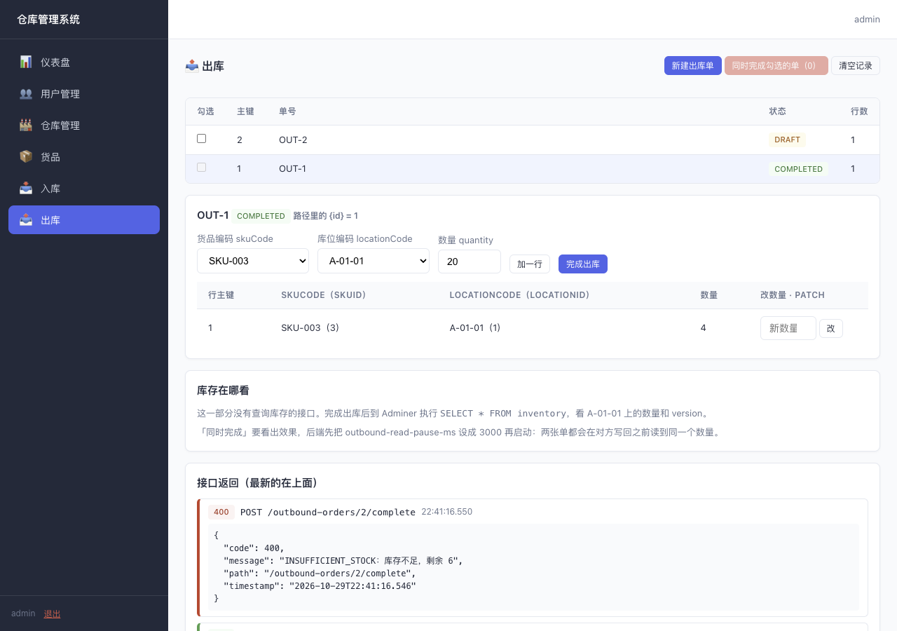
2. 用到的表
| 表 | 存什么 |
|---|---|
outbound_order | 出库单：单号、状态（DRAFT / COMPLETED） |
outbound_order_line | 出库单上的每一行：哪种货、哪个库位、出多少 |
inventory | 第一部分的库存表。每行多一列 version：这一行被改过几次，第二次课要用 |
stock_flow | 库存流水：每次入库完成记一条，像银行流水 |
3. 案例：从 A-01-01 出 4 个垫圈
A-01-01 上原来有 10 个垫圈。页面上点三下：新建出库单、加一行（SKU-003、A-01-01、4）、完成出库。前两步只记单据，第三步才动库存。跟着「完成出库」从页面走到数据库：
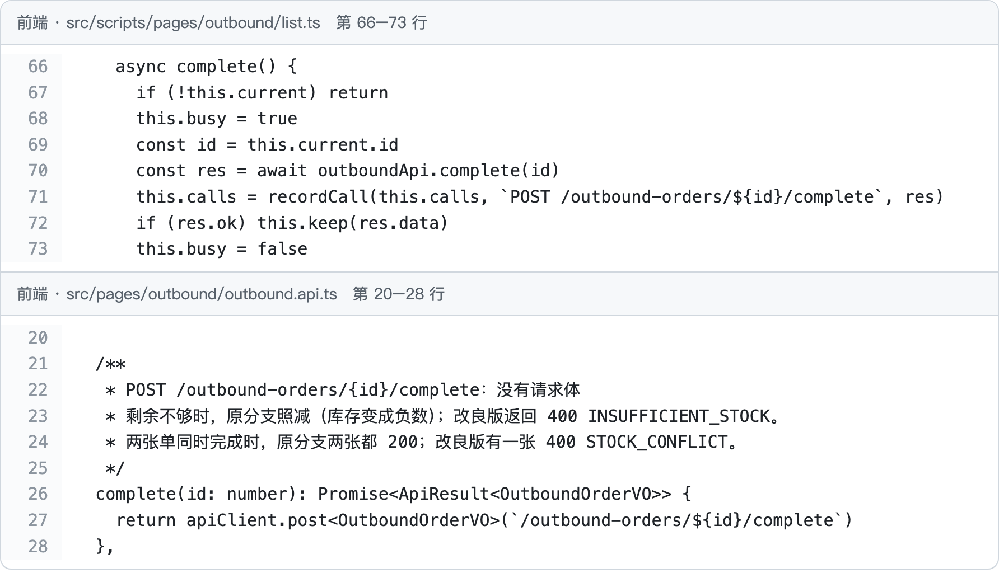
complete()，调 outboundApi.complete(id)，发出 POST /outbound-orders/1/complete，没有请求体。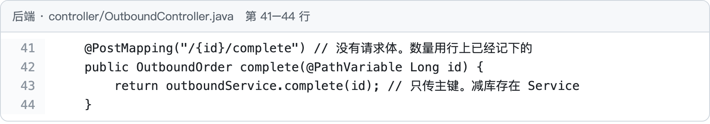
OutboundService.complete。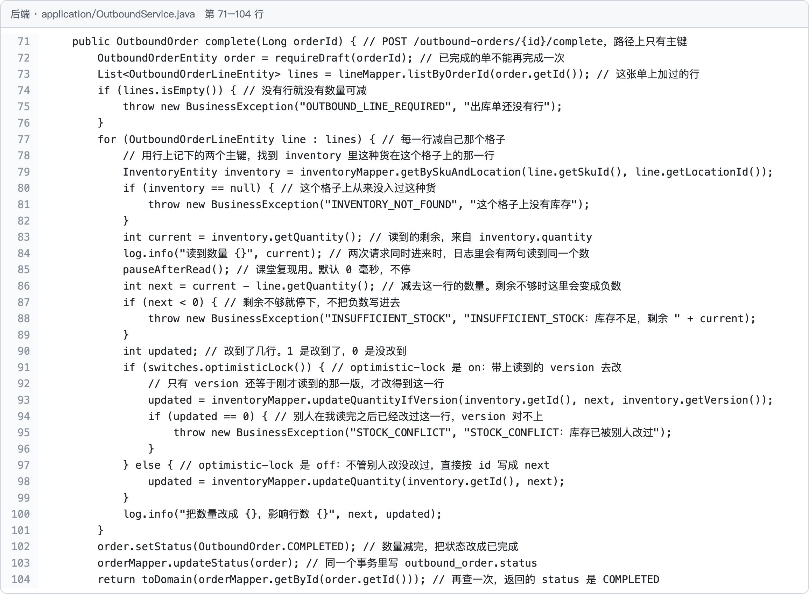
inventory 那一行；第 83 行读到剩余 10；第 86 行算出 10 − 4 = 6；第 87–89 行不够就抛 INSUFFICIENT_STOCK（OUT-2 出 20 停在这里）；第 91–99 行把 6 写回去，这一段第二次课细讲；第 102–103 行把单改成 COMPLETED。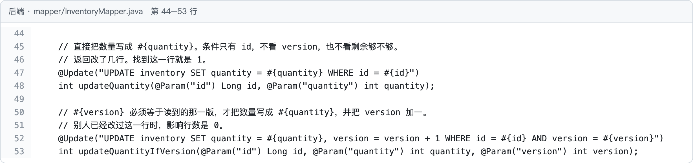
version 加一，条件是 version 还等于刚才读到的值。第 47 行是不带 version 的写法，第二次课对比用。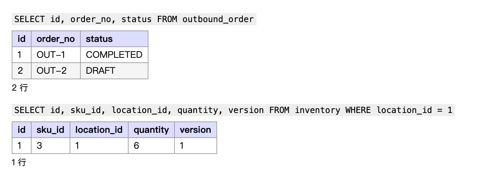
version 从 0 变成 1。4. 两个人同时出库会怎样
格子上只剩 1 个垫圈，两个仓管员各建一张出库单出 1 个，几乎同时点了「完成」。应该一张成功、一张因为不够被拒。
完成出库是「先读、再算、再写」三步。两个请求都在对方写回之前读到 1，都算出 1 − 1 = 0，都把库存写成 0：
| 时间 | 请求 A（OUT-1） | 请求 B（OUT-2） | 库存 |
|---|---|---|---|
| 1 | 读到 1 | 1 | |
| 2 | 读到 1 | 1 | |
| 3 | 算出 0，写回 0 | 0 | |
| 4 | 算出 0，写回 0 | 0 |
结果两张单都完成，拿走 2 个，库存只少了 1 个。后写的把先写的盖掉了，这叫丢失更新。剩余检查也挡不住：两边算出的都是 0，不小于 0。
手点很难让两个请求在几毫秒内先后到。课上这样演示：后端启动参数加 --app.lesson.optimistic-lock=off --app.lesson.outbound-read-pause-ms=3000，让出库读完数量后停 3 秒；页面上勾选两张草稿单，点「同时完成勾选的单」，两个请求同一刻发出：
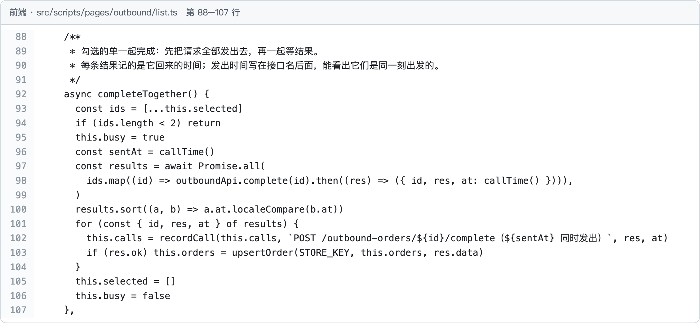
completeTogether 用 Promise.all 对每张勾选的单各调一次 outboundApi.complete，两个请求同一刻发出。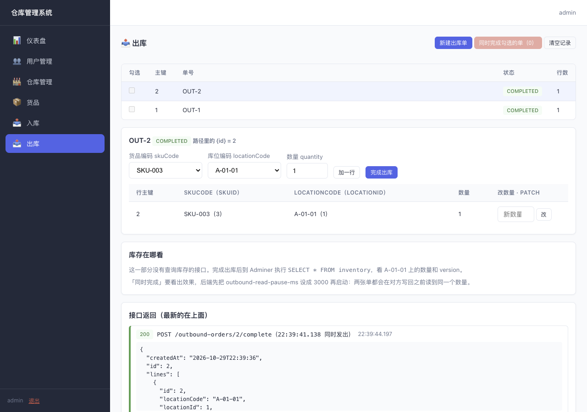
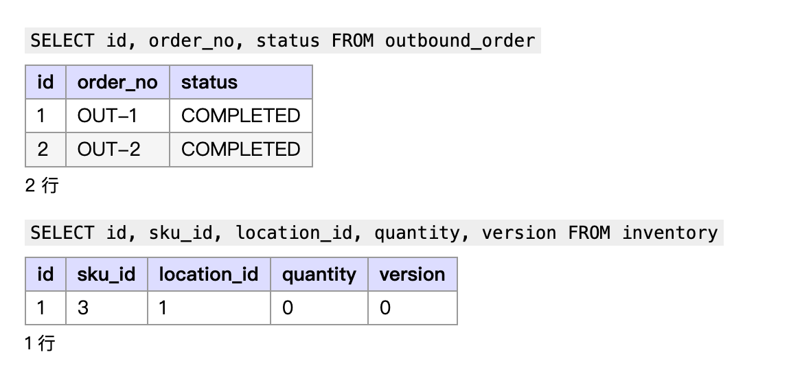
version 还是 0：拿走了 2 个，只扣了 1 次。5. 乐观锁：带上 version 再改
办法是写回时确认「我读到的那一版还没被别人改过」。inventory 每行有 version，每改一次加一。回到第 3 节的两张代码图：
- Service 第 91–96 行：读的时候连
version一起读出来，写的时候调updateQuantityIfVersion，影响行数是 0 就抛STOCK_CONFLICT。 - Mapper 第 52 行：
WHERE id = #{id} AND version = #{version}，写成功时version = version + 1。
两个请求还是都读到数量 1、version 0。先写的那次条件成立，库存变成 0，version 变成 1。MySQL 让第二条 UPDATE 等第一条提交后再执行，这时 version 已经是 1，version = 0 对不上，改到 0 行，返回 STOCK_CONFLICT。
去掉 --app.lesson.optimistic-lock=off（默认就是打开的）重启，再做一遍：
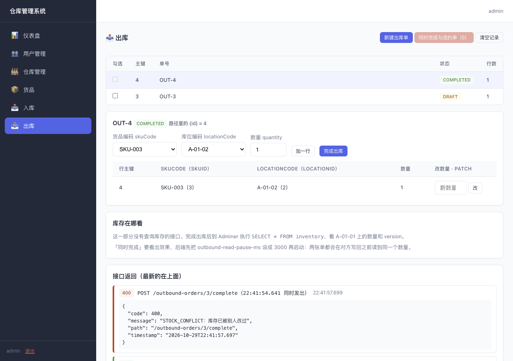
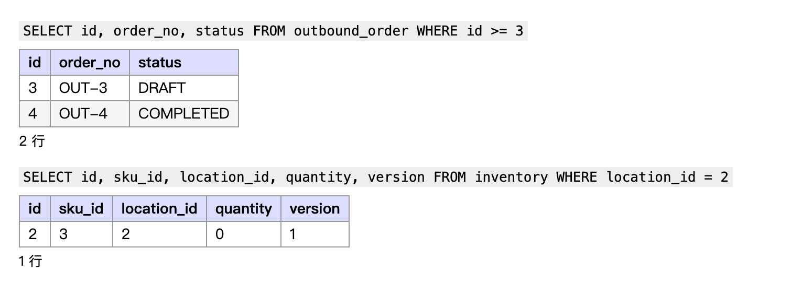
version 1：只成功了一次，账对得上。被拒的那一张，课上不做自动重试，由仓管员重新提交。
6. 剩下的自己看
照着第 3 节的读法，从前端文件找到 Controller、Service、Mapper，再到表：
| 内容 | 做什么 | 代码在哪 |
|---|---|---|
| 新建出库单、加一行 | 和入库一样：先建草稿，货品编码、库位编码换成主键再插入 | OutboundController → OutboundService.create / addLine |
| 改一行的数量（PATCH） | 只有草稿能改；已完成的单返回 400 ORDER_NOT_EDITABLE，因为库存已经按原数量减过 | OutboundService.updateLine |
| 入库流水 | 入库完成时每一行写一条 stock_flow，和加库存、改状态在同一个事务里，失败时一起撤回 | InboundService.complete / writeFlow |
7. 作业里写同类接口时
凡是「先读一个数、算一下、再写回去」的地方，都要想到两个请求同时来：剩余够不够要在写之前检查；写回的 UPDATE 条件要带上 version，影响行数是 0 时要报错，不能当成功。